Welcome to Riverton
Under Pressure Kids
Big adventures begin beneath our feet!
Explore the hidden world of water with Drip, Bolt, Piper, Max and Mia.
Start exploring
Discover the hidden world
Water adventures
Explore 25 stories and lessons, plus bonus illustrated discoveries.
Water and our community

How Do Water Towers Work?
Read the discovery
How Do Water Pumps Work?
Read the discovery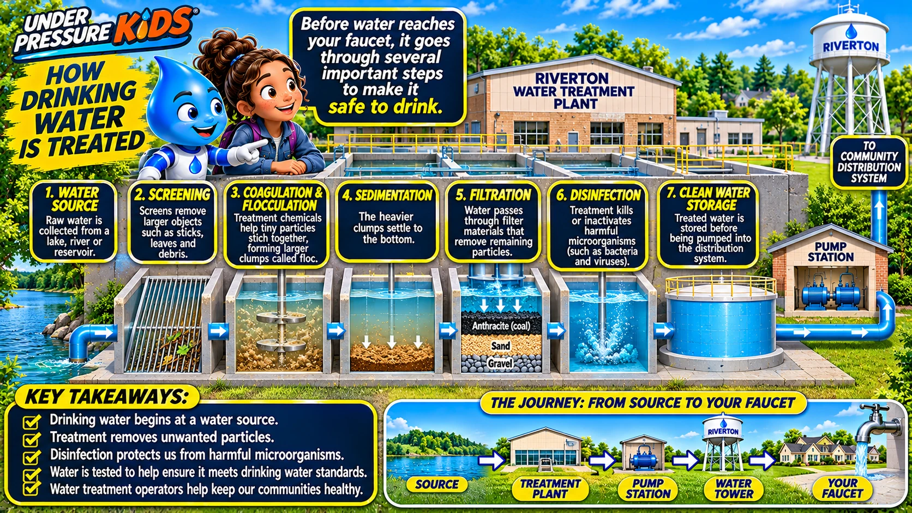
How Does Water Get Clean?
Read the discovery
Why Do We Need Water?
Read the discovery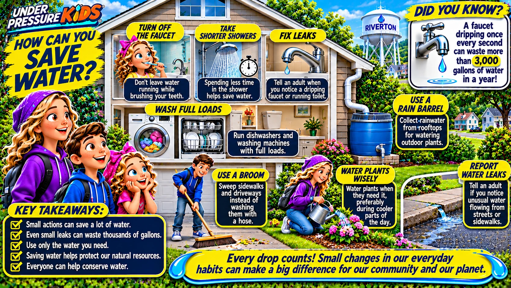
How Can You Save Water?
Read the discoveryBeneath our streets
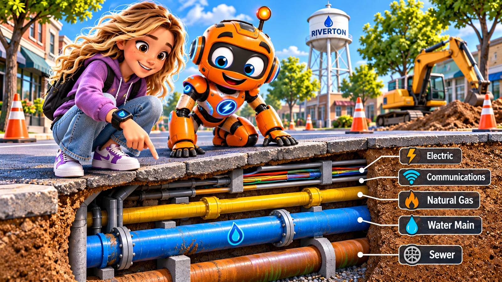
What's Beneath Our Streets?
Read the discovery
Why Do Water Pipes Break?
Read the discovery
How Do Workers Fix Broken Water Pipes?
Read the discovery
What Is a Water Valve?
Read the discovery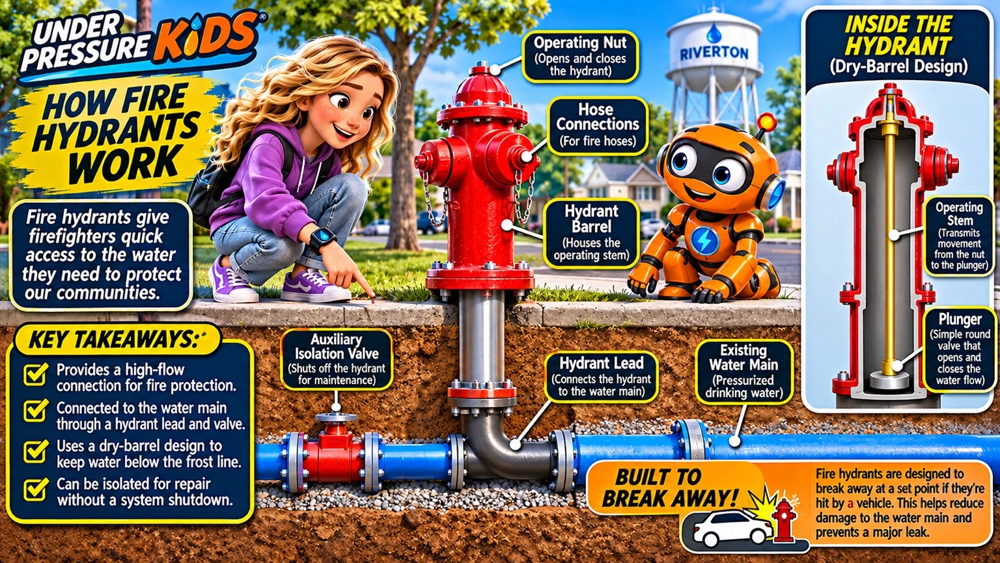
How Do Fire Hydrants Work?
Read the discovery
Why Are Fire Hydrants Different Colors?
Explore this illustrated discovery.
Read the discoverySewer systems and the environment

Where Does Your Toilet Water Go?
Read the discovery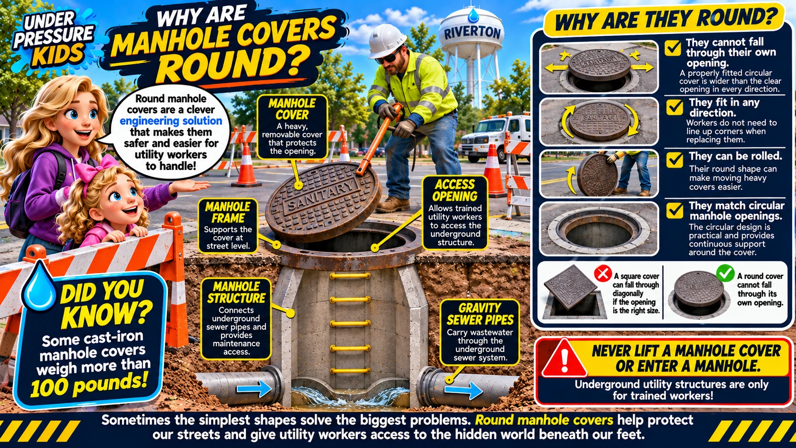
Why Are Manhole Covers Round?
Explore this illustrated discovery.
Read the discovery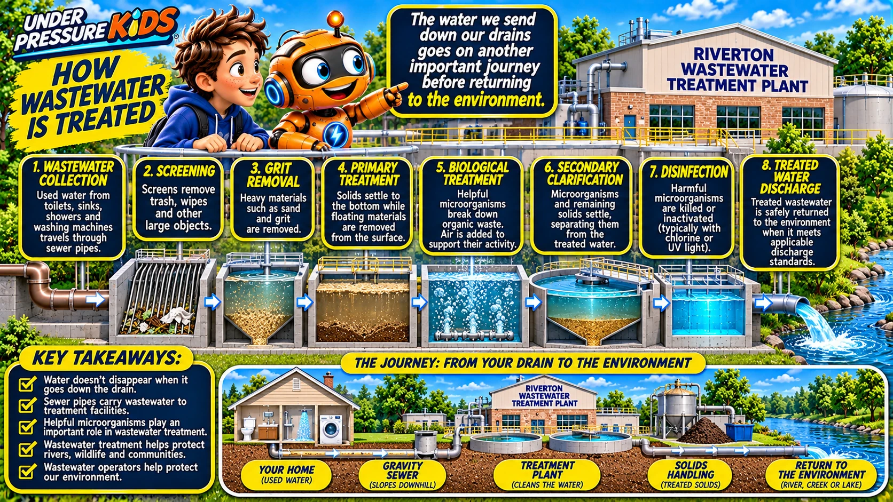
How Does a Wastewater Treatment Plant Work?
Read the discovery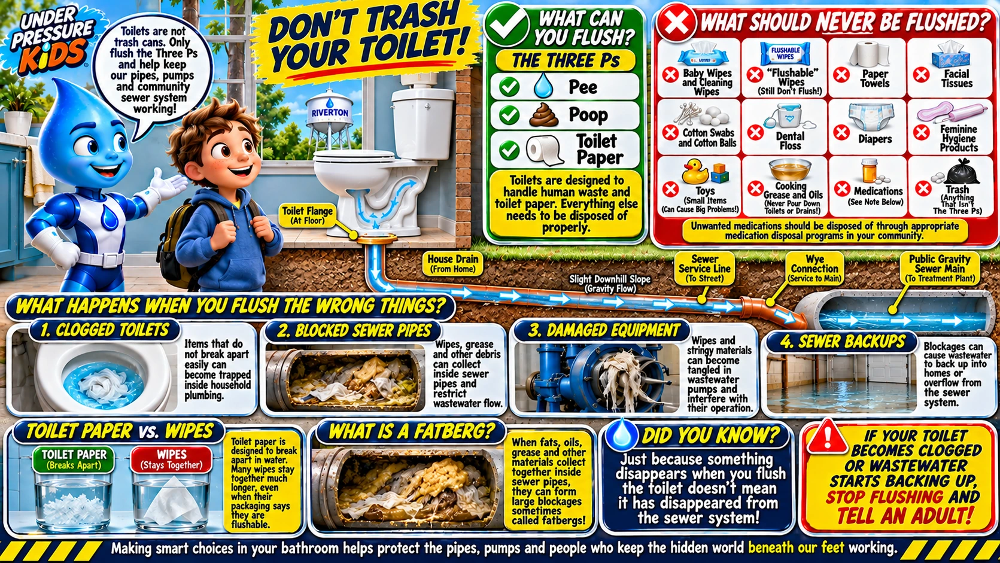
What Shouldn't Go Down the Toilet?
Explore the Three Ps and help protect our sewer system.
Read the discovery
Meet the Sewer Cleaning Truck
Explore this illustrated discovery.
Read the discovery
Where Does Rainwater Go?
Read the discovery
The Amazing Journey of a Water Drop
Read the discoveryMachines, safety and water heroes
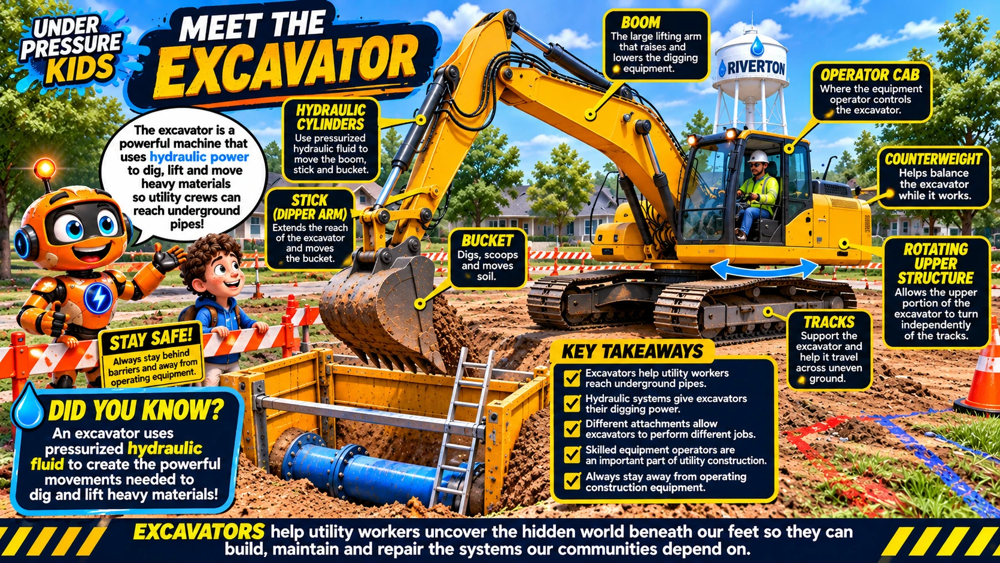
Meet the Excavator
Explore this illustrated discovery.
Read the discovery
Meet the Dump Truck
Explore this illustrated discovery.
Read the discovery
Meet the Backhoe
Explore this illustrated discovery.
Read the discovery
Why Do Workers Wear Hard Hats?
Explore this illustrated discovery.
Read the discovery
Why Should You Call Before You Dig?
Explore this illustrated discovery.
Read the discovery
Who Keeps Our Water Flowing?
Read the discoveryBonus visual discoveries

How Hot Taps Work
Read the discovery
How Line Stops Work
Read the discovery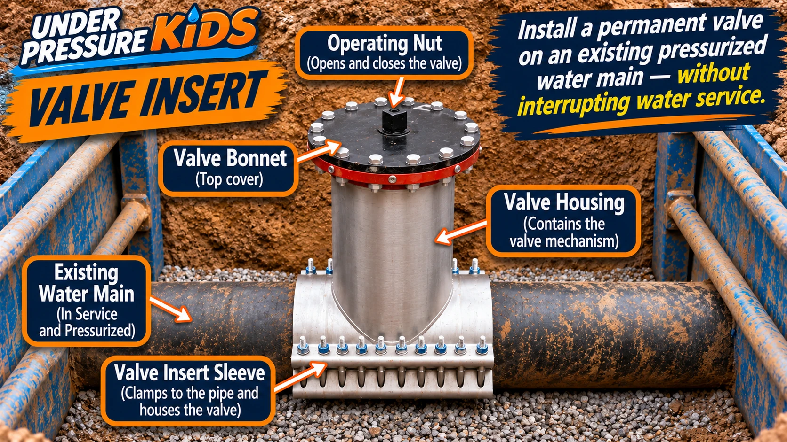
How Valve Inserts Work
Read the discovery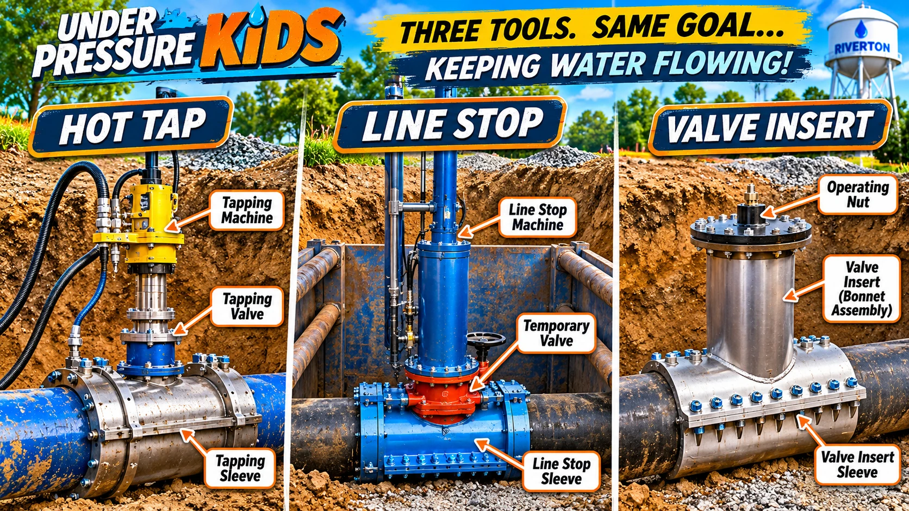
Three Tools for Working on Water Mains
Read the discovery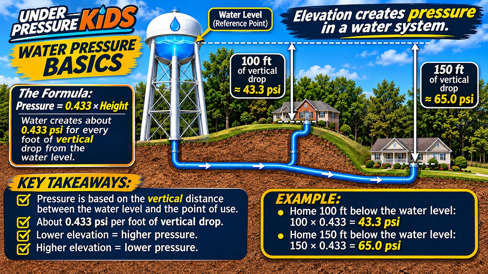
Water Pressure Basics
Read the discovery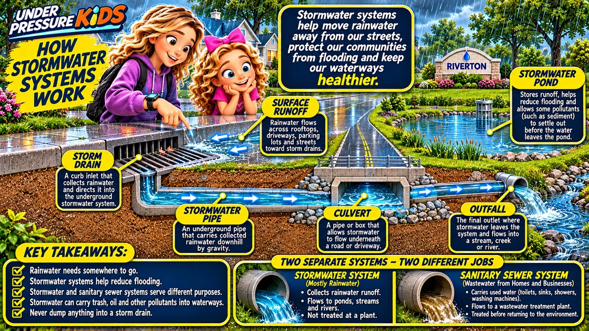
How Stormwater Systems Work
Read the discovery
How Water Meters Work
Read the discovery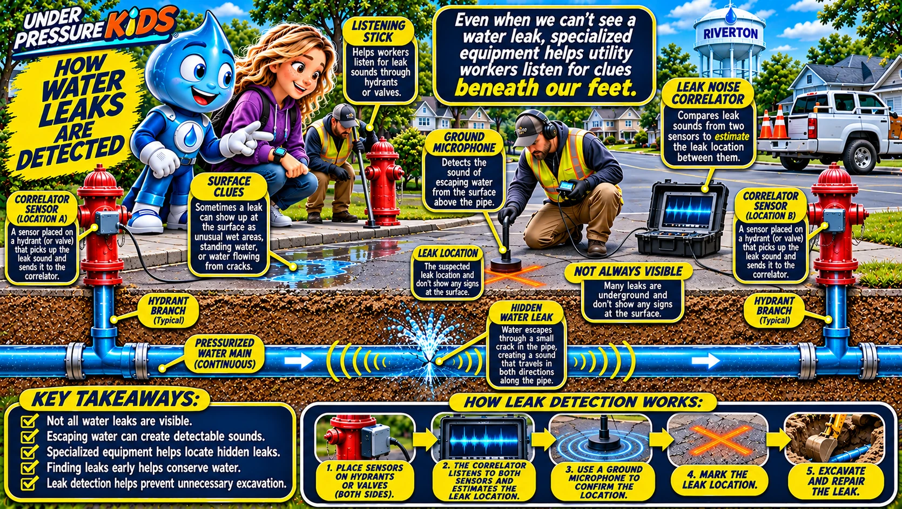
How Water Leaks Are Detected
Read the discovery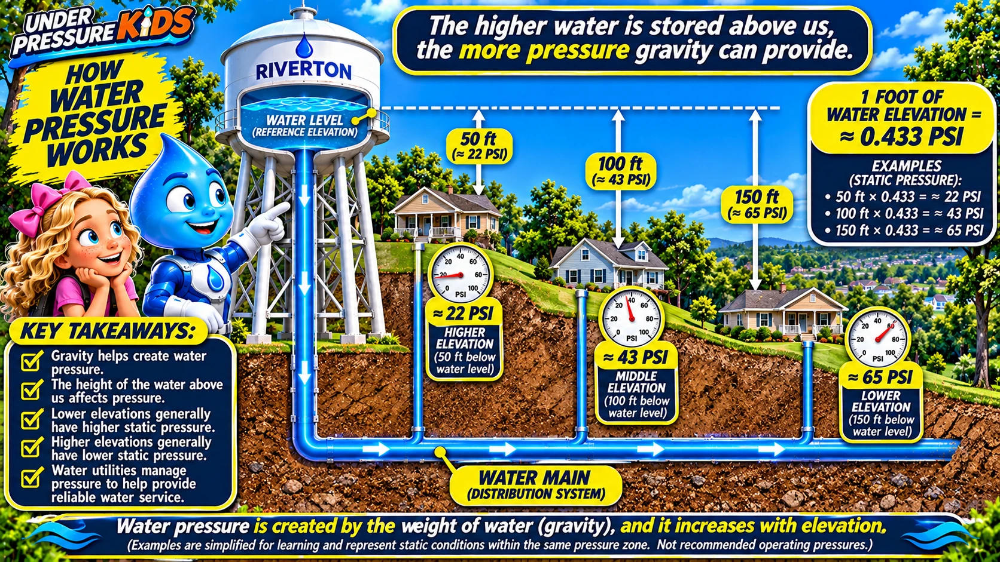
How Water Pressure Works
Read the discovery
What Is Water Hammer?
Read the discoveryBooks for curious kids
The Mystery of the Missing Water
Join the Riverton crew on an illustrated adventure to discover why the water has stopped flowing.
Under Pressure Kids Coloring & Activity Book
Explore pipes, hydrants, trucks, mazes and more with Piper, Drip and Bolt.
For parents and educators
Explore illustrated lessons about water, infrastructure and the people who keep communities running. Read together and encourage children to ask questions about the world beneath their feet.